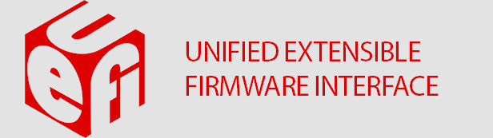
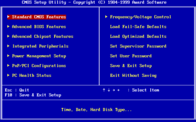
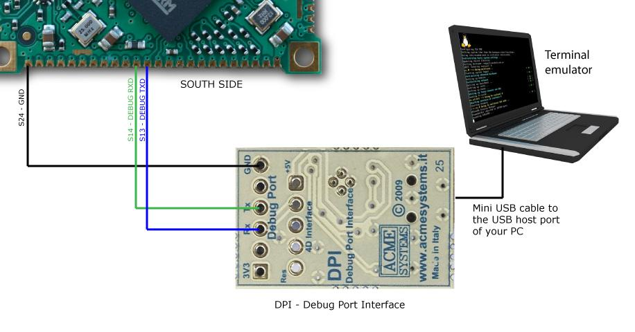
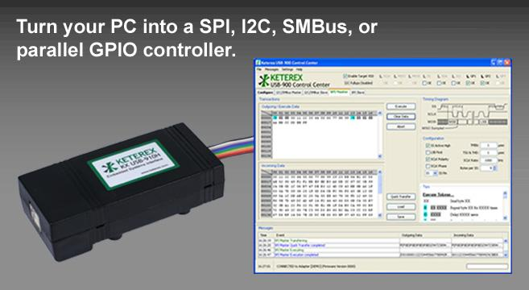
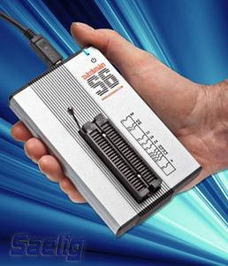
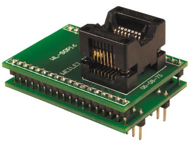
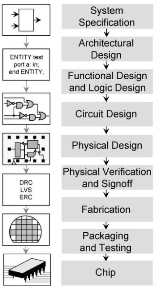

Firmware is hardware instruction code that is stored on non volitile memory in an integrated circuit or "chip". For this reason it is often referred to as chip code.
The most important firmware in a computer system in the Basic Input Output System (BIOS). The BIOS is used to perform hardware initialization during the booting process (power-on startup), and to provide runtime services for operating systems and programs.
BIOS firmware comes pre-installed on a the system board, it is the first software run when powered on. It can usually be updated but requires a special software "flash" tool provided by the manufacturer to do so. The most popular BIOS companies as of 2018 are American Megatrends Inc (AMI) and AWARD.

Unified Extensible Firmware Interface (UEFI) is the successor to BIOS, performing the same tasks in new ways.
Both legacy BIOS and UEFI provide a "System Startup" tool that allows a user to change some of their settings. Settings vary from system to system, but one of the most commonly used setting is the boot order.
The Boot order allows you to choose which storage device will boot the OS. This has become a very handy alternative way to boot your system with a different operating system. Software bootloaders used to be the preferred method, but they are prone to getting replaced.
Windows system updates will often replace the software boot loader, wiping any secondary boot options like Linux bootup. To avoid this from re-occuring, many dual boot users now install Windows and Linux on separate disks, each disk with their own software boot loader, which will not get over written by updates.
When they want to boot into another OS, they simply select a disk from this lower level hardware boot loader.

With devices that have only one disk, like small laptops, alternatives exist such as running your OS in a virtual environment, or from a USB boot stick.
If your system includes adapters like a hardware RAID controller or SAS host bus adapter, you will also see those peripherial BIOS systems load after the system BIOS. These peripherials may include startup interfaces of their own. This is most common with server hardware.
Flashing involves the overwriting of existing firmware or data, contained in EEPROM or flash memory modules present in an electronic device, with new data.
This can be done to upgrade a device or to change the provider of a service associated with the function of the device, such as changing from one mobile phone service provider to another or installing a new operating system.
If firmware is upgradable, it is often done via a program from the provider, and will often allow the old firmware to be saved before upgrading so it can be reverted to if the process fails, or if the newer version performs worse. This is case with most computer BIOS firmware.
In other cases an electronic device will allow firmware updates to happen with a workstation and a serial connection (like USB) to a debug port interface (DPI) like in the image below.

Similar types of interfaces include I2C, SPI, SMBus, GPIO, etc, most of which can be adapted to work in a USB port and allow you to read and write with the right software.

In cases where you cannot flash firmware within the system, or connect a workstation to a port, you can desolder the chip from the PCB and plug it into a chip programmer.
A chip programmer allows you to connect your chip to a workstation, usually through a USB connection, and read and write code to and from the chip, with the specially designed software that comes with the programmer interface.
 
A Universal Chip Programmer usually has options to purchase additional adapter modules that will talk to chips that don't fit directly into the device, such as surface mount ICs.
Integrated Circuits (ICs)
Integrated Circuit (IC) also known as a "chip", is a microscopic electronic circuit array formed by the fabrication of various electrical and electronic components (resistors, capacitors, transistors, and so on) on a semiconductor material (silicon) wafer, which can perform operations similar to the large electronic printed circuit boards (PCBs) made of discrete electronic components.

Digital ICs
ICs that operate only at a few defined levels instead of all levels of signal amplitude are called as Digital ICs. These are designed by using digital logic gates, multiplexers, flip flops and other electronic components of circuits.
Digital ICs are not just microprocessors and microcontrollers. There are many different types of digital ICs, such as programmable ICs, memory chips, logic ICs, power management ICs and interface ICs.
For more about the digital logic, read the Digital Logic page.
Analog ICs
Not all ICs are digital. ICs that operate over a continuous range of signal are called as Analog ICs. These are subdivided as linear Integrated Circuits (Linear ICs) and Radio Frequency Integrated Circuits (RF ICs). A frequently used analog IC is an operational amplifier or simply called as an op-amp.
Mixed ICs
The integrated circuits that are obtained by the combination of analog and digital ICs on a single chip are called as Mixed ICs. These ICs functions as Digital to Analog converters, Analog to Digital converters (D/A and A/D converters) and clock/timing ICs.
Categories of integrated circuits (ICs) include the following:
Logic Circuits
These ICs are designed using logic gates-that work with binary input and output (0 or 1). These are mostly used as decision makers. Based on the logic or truth table of the logic gates, all the logic gates connected in the IC give an output based on the circuit connected inside the IC- such that this output is used for performing a specific intended task. A few logic ICs are shown above.
Comparators
The comparator ICs are used as comparators for comparing the inputs and then to produce an output based on the ICs’ comparison.
Switching ICs
Switches or Switching ICs are designed by using the transistors and are used for performing the switching operations. The above figure is an example showing an SPDT IC switch.
Audio amplifiers
The audio amplifiers are one of the many types of ICs, which are used for the amplification of the audio. These are generally used in the audio speakers, television circuits, and so on. The above circuit shows the low- voltage audio amplifier IC.
Operational amplifiers
The operational amplifiers are frequently used ICs, similar to the audio amplifiers which are used for the audio amplification. These op-amps are used for the amplification purpose, and these ICs work similar to the transistor amplifier circuits. The pin configuration of the 741 op-amp IC is shown in the above figure.
Timer ICs
Timers are special purpose integrated circuits used for the purpose of counting and to keep a track of time in intended applications. The block diagram of the internal circuit of the LM555 timer IC is shown in the above circuit.
ICs are also categorized based on the number of components used (typically based on the number of transistors used), they are as follows:
SSI
Small-scale integration consists of only a few transistors (tens of transistors on a chip), these ICs played a critical role in early aerospace projects.
MSI
Medium-scale integration consists of some hundreds of transistors on the IC chip developed in the 1960s and achieved better economy and advantages compared to the SSI ICs.
LSI
Large-scale integration consists of thousands of transistors on the chip with almost the same economy as medium scale integration ICs. The first microprocessor, calculator chips and RAMs of 1Kbit developed in the 1970s had below four thousand transistors.
VLSI
Very large-scale integration consists of transistors from hundreds to several billions in number.(Development period: from 1980s to 2009)
ULSI
Ultra large-scale integration consists of transistors in excess of more than one million, and later wafer-scale integration (WSI), system on a chip (SoC) and three dimensional integrated circuit (3D-IC) were developed.
All these can be treated as generations of integrated technology. ICs are also classified based on the fabrication process and packing technology. There are numerous types of ICs among which, an IC will function as timer, counter, register, amplifier, oscillator, logic gate, adder, microprocessor, and so on.